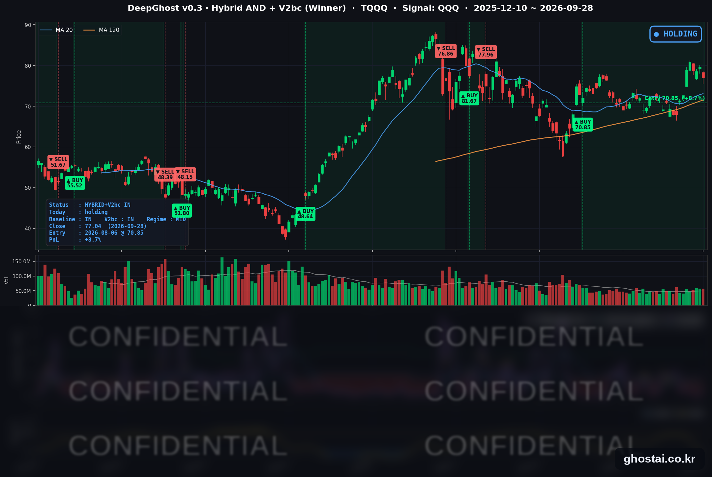

10년물 금리 5.24% 19년 최고
· Ghost.AI 데일리 리포트
👻 매일 시그널과 히스토리를 홈페이지에서 한눈에 → www.ghostai.co.kr
회원 페이지 안내 — 회원 가입하시면 커버리지 전 종목의 원본 시그널과 분석 레포트를 매일 확인하실 수 있습니다. 회원 페이지는 블로그·유튜브보다 먼저 업데이트됩니다. 선착순 100명을 모집하고 있으며, 이메일과 필명만으로 가입하실 수 있고 서비스 사용료는 받지 않습니다. 가입 신청 후 운영자 승인을 거쳐 이용하실 수 있습니다.
미국 10년물 국채금리가 5.240%로 2007년 6월 이후 가장 높은 종가를 기록했습니다. 금요일에는 장기물만 올랐지만, 월요일에는 트럼프 대통령이 이란의 호르무즈 해협 재개방 계획을 거부해 유가가 오르자 2년물까지 11bp 올랐습니다. 연준의 추가 인상 기대가 커지면서 금(GLD)은 3.94% 내렸고, 나스닥은 9월에 크게 오른 AI·반도체 종목 중심으로 0.92% 내렸습니다.
📊 오늘의 매매 신호
| 항목 | 내용 |
|---|---|
| 오늘 할 일 | ✅ 아무것도 안 해도 됩니다 |
| 포지션 상태 | 📈 TQQQ 보유 중 (IN POSITION) |
| 매수 진입일 | 2026-08-06 (37거래일째) |
| 진입가 → 현재가 | $70.85 → $77.04 |
| 현재 포지션 수익 | +8.74% |
TQQQ 시그널 — IN POSITION
현재 상태: 매수 포지션 유지 중 | 이번 포지션 수익 +8.74%

나스닥100(QQQ)이 -1.07% 내리면서 TQQQ는 -3.22% 하락한 77.04달러로 마감했습니다. 9월 10일 이후 가장 큰 하루 하락입니다. 전략의 평가수익률은 전 거래일 +12.35%에서 +8.74%로 줄었습니다. 전략은 보유를 유지했고, 모델 기준으로 매도 신호까지의 여유는 전일보다 줄었습니다.
지금과 비슷한 상태에서 과거 매도 신호가 나온 날은 대부분 나스닥100이 하루에 크게 내린 날이었습니다. 금리 수준 자체보다 나스닥이 하루에 크게 밀리는 날이 나오는지가 전략 상태를 가르는 변수입니다. 이번 주에는 금리 방향에 영향을 줄 8월 PCE 물가(9/30)와 9월 고용보고서(10/2)가 나옵니다.
오늘 미국 시장 — 시황 요약
지수 마감
| 지수 | 종가 | 등락률 |
|---|---|---|
| S&P 500 | 7,683.69 | -0.77% |
| 나스닥 종합 | 26,820.38 | -0.92% |
| 다우존스 | 51,481.51 | -0.67% |
| IWM (러셀 2000 ETF) | 280.02 | -0.69% |
| QQQ (나스닥100) | 736.53 | -1.07% |
| TQQQ | 77.04 | -3.22% |
네 지수 모두 1% 안쪽으로 내렸습니다. 다우와 소형주 IWM은 대부분 개장 전에 내렸고, 대형 기술주 중심의 QQQ는 개장 전과 정규장에서 비슷한 폭으로 내렸습니다. S&P 500 구성종목 중 오른 종목은 32.8%로, 금요일(65.2%)의 절반 수준입니다. S&P 500은 사상 최고 종가(8/13) 대비 -1.48%, 나스닥 종합은 사상 최고 종가(9/22) 대비 -1.56%입니다.
국채 금리 동향
| 만기 | 수익률 | 전 거래일 대비 |
|---|---|---|
| 3개월 | 4.057% | -1.3bp |
| 5년 | 5.068% | +6.1bp |
| 10년 | 5.240% | +5.6bp |
| 30년 | 5.561% | +5.7bp |
10년물은 2007년 6월 이후 가장 높은 종가입니다. 5거래일 연속 올랐고, 9월 21일(4.963%)보다 27.7bp 높습니다. 30년물 5.561%는 2004년 5월 고점(5.558%)을 넘었고, 5년물도 2007년 7월 이후 최고 종가입니다.
금요일과 달라진 점은 단기물입니다. 금요일에는 5년물과 2년물이 내리고 장기물만 올랐지만, 월요일에는 재무부 공시 기준 2년물이 4.81%에서 4.92%로 11bp 올라 만기 중 가장 많이 올랐습니다. 2년물은 연준의 정책금리 전망에 가장 민감한 구간입니다. 트럼프 대통령이 26일(토) 이란의 호르무즈 해협 7일 재개방 계획을 거부하자 유가가 올랐고, 물가 부담에 따른 추가 인상 기대가 커지면서 단기 금리가 올랐습니다. 10년물과 3개월물의 차이는 118.3bp로 2022년 7월 이후 가장 크고, 역전은 없습니다.
연준 발언 & 금리 패스
쿡(Cook) 이사가 오클랜드에서 AI와 경제를 주제로 연설했습니다.
- 9월 FOMC의 금리 인상에 찬성했다고 밝혔습니다.
- 8월까지 12개월 물가를 전체 3.8%, 근원 3.4%로 추정하며 "목표의 두 배에 가깝다"고 했습니다.
- 높아진 유가의 전가, AI 투자 확대, 중동 분쟁에 따른 공급망 차질이 앞으로 몇 달간 물가를 밀어 올릴 것으로 봤습니다.
- 노동시장이 금리 인상을 감당할 수 있는 상태라고 평가하고, "물가를 목표로 이끌기 위해 어떤 정책금리가 필요한지 검토하겠다"고 했습니다.
추가 인상을 배제하지 않았고 유가를 물가 위험으로 직접 꼽은 매파적 발언입니다. CME FedWatch 기준 10월 인상 확률은 70% 안팎으로 금요일(64% 안팎)보다 높아졌다고 보도됐습니다. 연준은 9월 16일 정책금리를 3.75~4.00%로 올렸고, 다음 FOMC는 10월 27~28일입니다. 쿡 이사가 추정한 8월 물가는 9월 30일 PCE 발표로 확인됩니다.
오늘의 핵심 이슈
- 10년물 금리 2007년 이후 최고, 단기 금리도 함께 상승. 장기물만 오르던 금요일과 달리 2년물이 가장 많이 올랐습니다. 이란의 호르무즈 재개방 계획 거부로 유가가 오르자 추가 인상 기대가 커졌습니다.
- 금 3.94% 하락. 금 ETF GLD는 6월 10일 이후 가장 큰 하루 낙폭을 기록했고, 8월 4일 이후 가장 낮은 종가로 마감했습니다. 유가가 올랐지만 금리와 달러가 함께 오르면서 이자가 없는 자산인 금이 약했습니다.
- 메타의 기업용 AI 진출에 소프트웨어 약세, 9월 급등 반도체는 되돌림. 메타가 기업용 AI 사업부(Meta Enterprise Platform)를 새로 만들고 몽고DB CEO를 책임자로 영입한다고 발표하자 오라클(-3.28%)·서비스나우(-3.07%)·세일즈포스(-2.88%)가 내렸고, 메타도 4.79% 내렸습니다. 9월에 크게 오른 퀄컴(-7.17%)·인텔(-5.67%)·AMD(-3.61%)도 크게 내렸습니다. 엔비디아는 자사주 매입 한도를 1,500억 달러 늘린다고 발표하고 1.68% 올라 반도체 중 가장 많이 올랐습니다.
변동성 & 투자심리
VIX는 14.87에서 16.07로 올랐습니다(+8.07%). 9월 16일 이후 가장 높은 종가이고, 하루 상승률은 9월 10일 이후 가장 컸습니다. 다만 장기 금리가 수십 년 만의 수준까지 오른 것에 비하면 변동성 지표는 여전히 16 안팎입니다. 공포탐욕지수는 30대 중반(약 34)으로 "공포" 구간이며, 지난주 후반(36~37)보다 낮아졌습니다.
매크로 & 원자재
| 품목 | 종가 | 등락률 |
|---|---|---|
| 원유 (USO) | $150.01 | +1.13% |
| 금 (GLD) | $377.91 | -3.94% |
원유 ETF는 개장 전 +2.40%까지 올랐다가 정규장에서 상승 폭을 절반 넘게 줄였습니다. 금은 낙폭의 대부분(-3.47%)이 개장 전에 나왔습니다. 금값 하락에 금광주 뉴몬트도 4.43% 내렸습니다.
- 9월 댈러스 연은 제조업 서베이: 생산지수는 16.1에서 29.5로 크게 올랐지만, 일반 사업활동 지수는 11.6에서 9.8로 내렸습니다. 원자재 가격 지수는 44.1에서 52.2로 올라 투입 비용 부담이 커졌습니다.
주요 종목 동향
| 종목 | 종가 | 등락률 | 비고 |
|---|---|---|---|
| NVDA | 228.86 | +1.68% | 자사주 매입 한도 1,500억 달러 증액 |
| GOOGL | 342.75 | -0.34% | |
| AAPL | 338.40 | -0.78% | 사상 최고 종가 다음 날 소폭 하락 |
| AVGO | 349.57 | -0.92% | |
| MSFT | 509.22 | -1.35% | 메타 발표로 약세 출발, 정규장에서 일부 회복 |
| AMZN | 246.15 | -1.41% | |
| MU | 1,053.98 | -2.61% | 9/30 장 마감 후 실적 발표 |
| NFLX | 69.23 | -2.70% | 9월 누적 -14.58% |
| TSLA | 357.45 | -3.94% | 증권사 3분기 인도량 추정치 하향 보도 |
| META | 715.62 | -4.79% | 기업용 AI 사업부 신설 발표 |
| INTC | 116.03 | -5.67% | 이틀 연속 하락, 9월 누적 +29.63% |
| QCOM | 187.48 | -7.17% | 6월 26일 이후 최대 낙폭 |
커버리지 12종목 중 오른 종목은 엔비디아 하나였습니다. 크게 내린 종목은 9월에 가장 많이 오른 메타·인텔과 퀄컴입니다. S&P 500 전체로는 9월 상승률과 이날 등락률 사이에 뚜렷한 관계가 없어, 되돌림은 AI·반도체 급등주에 한정됐습니다. 소프트웨어 안에서도 사이버보안주(팔로알토 +4.63%, 크라우드스트라이크 +2.82%)는 올랐고, 은행·증권주는 7종목 모두 내렸습니다.
이번 주 일정
- 9/29(화) 8월 JOLTS(구인 건수), 9월 소비자신뢰지수, 바 이사 경제전망 연설, 월러 이사 발언
- 9/30(수) 2분기 GDP 3차 추정, 8월 PCE 물가, 마이크론 실적(장 마감 후)
- 10/1(목) ISM 제조업, 제퍼슨 부의장 "미국 경제와 통화정책" 연설
- 10/2(금) 9월 고용보고서
12월 11일까지의 임시 예산안이 이미 통과돼 10월 1일 정부 셧다운 위험은 없고, 고용보고서도 예정대로 나옵니다.
Ghost.AI — Quantitative AI Investment
Model: DeepGhost v0.3 | Transformer-Based Deep Learning
Coverage: 13 tickers | Updated every trading day after US market close
⚠️ 본 자료는 정보 제공 목적으로만 작성되었으며 투자 권유가 아닙니다. 모든 투자의 책임은 투자자 본인에게 있습니다. 과거 성과가 미래 수익을 보장하지 않습니다.
[유의사항]
- 본 서비스는 불특정 다수를 대상으로 발행되는 단방향 정보 제공 서비스이며, 투자자 개인의 재산 상황·투자 목적·위험 선호도를 반영한 개별 투자 조언이 아닙니다.
- 고스트에이아이 주식회사는 고객과 쌍방향 의사소통(개별 상담, 맞춤형 자문 등)을 제공하지 않습니다.
- 본 콘텐츠는 투자 권유 또는 매매 주문의 청약·청약의 권유에 해당하지 않으며, 최종 투자 판단 및 그에 따른 손익의 책임은 전적으로 투자자 본인에게 있습니다.
고스트에이아이 주식회사